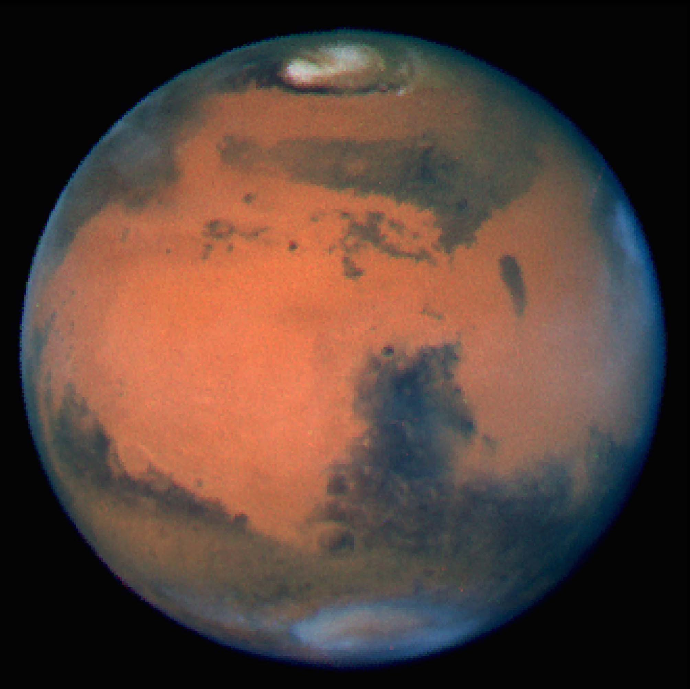
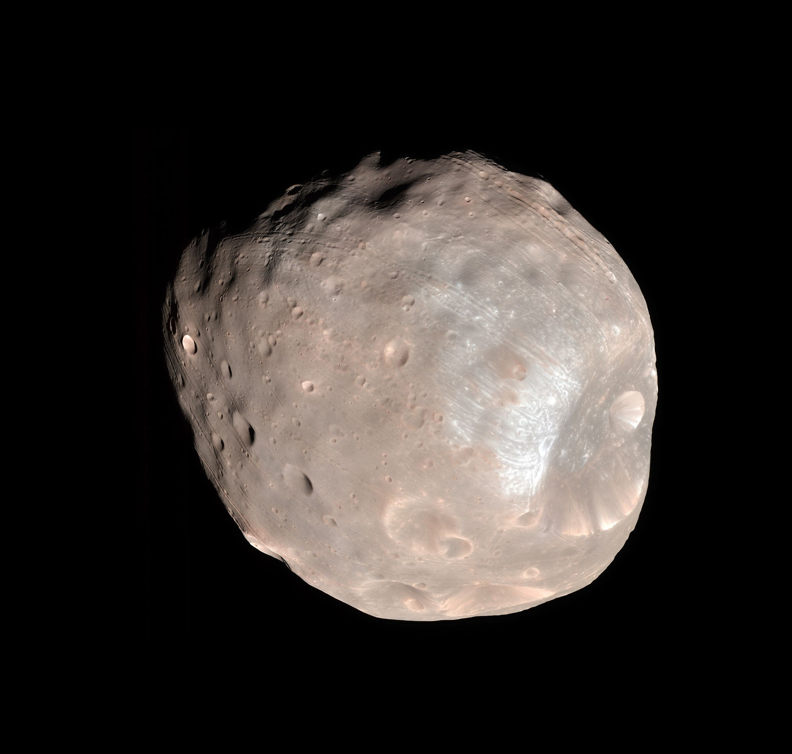
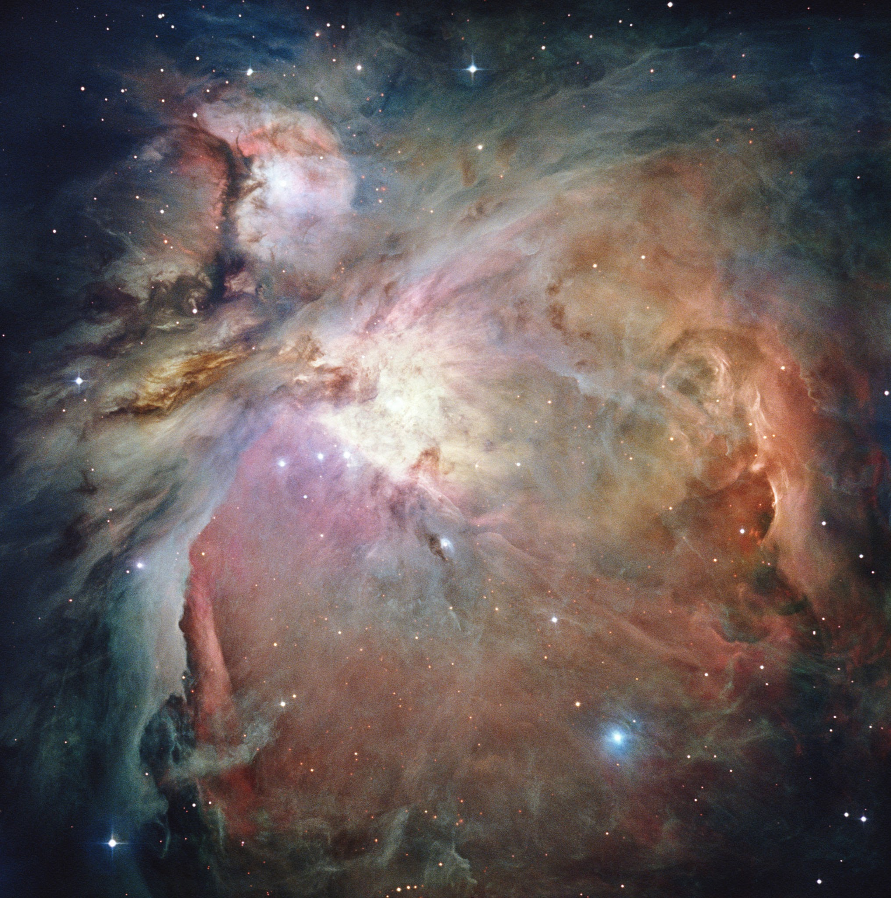
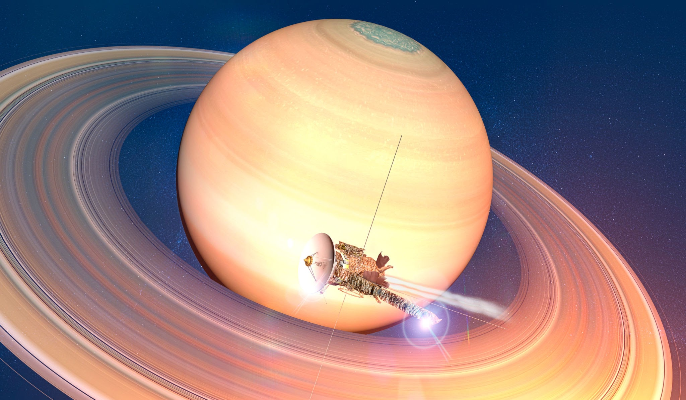
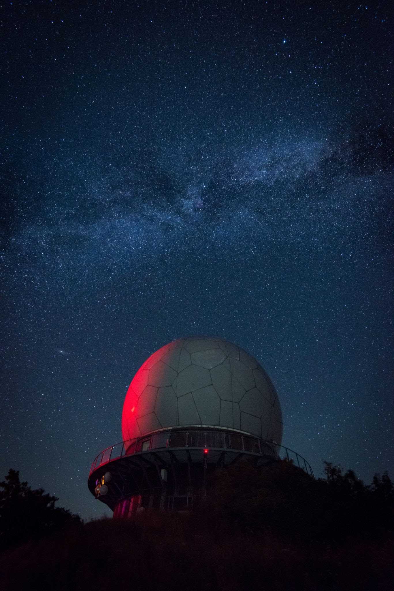
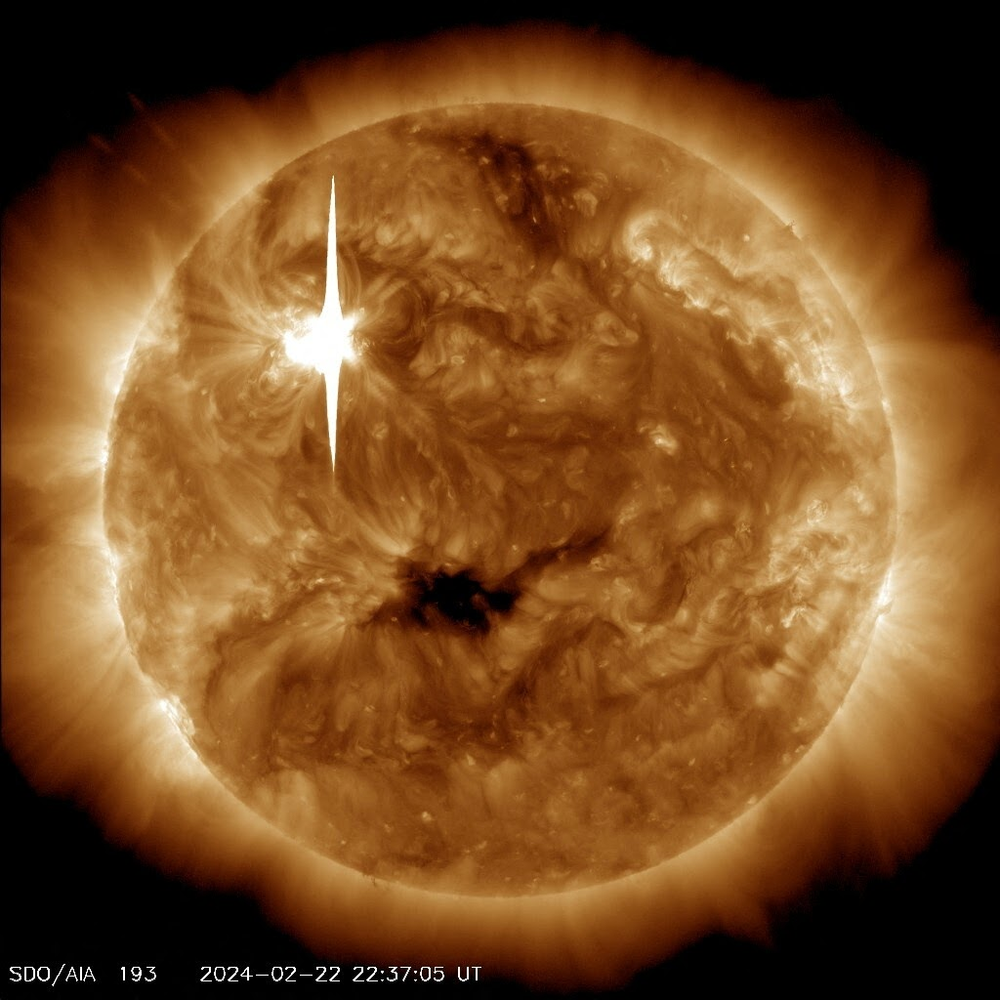

Archivo de Capturas - Observatorio Astronómico Central

Fobos en tránsito marciano (Cámara CCD-4)

Cráter Stickney al atardecer solar

Núcleo de la Nebulosa de Orión (Filtro H-alfa)

Saturno y división de Cassini

Cúpula norte bajo el centro galáctico

Actividad solar en banda estrecha
Para volver al indice, pulsa aqui